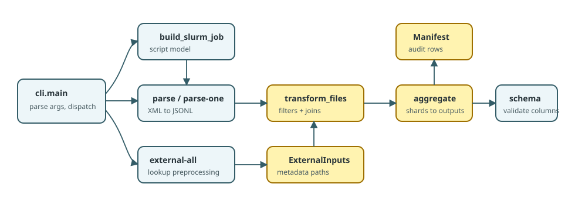

Function Flow
This page is a source-reading map. It lists the functions that carry data between stages and the files they read or write.
Command Dispatch
| Function |
File |
Role |
Calls / returns |
main() |
src/pubdelays/cli.py |
Parses CLI arguments and calls the selected command handler. |
args.func(args) |
cfg() |
src/pubdelays/cli.py |
Loads the TOML configuration used by a command. |
load_config() |
cfg_path() |
src/pubdelays/cli.py |
Resolves CLI path overrides and config defaults. |
Returns Path |
manifest_from_args() |
src/pubdelays/cli.py |
Opens the manifest selected by --manifest or config. |
Manifest(...) |
Parsing
| Function |
File |
Input |
Output |
cmd_parse_one() |
src/pubdelays/cli.py |
One XML/XML.GZ path and output directory. |
One JSON or JSONL parsed shard plus a manifest row. |
parse_one() |
src/pubdelays/cli.py |
One PubMed XML/XML.GZ file. |
Writes records atomically; returns count metadata. |
parse_medline_xml() |
src/pubdelays/parser/medline.py |
XML stream. |
Yields one parsed article dictionary at a time. |
parse_medline() |
src/pubdelays/parser/medline.py |
One MEDLINE citation element. |
Article fields used by transform. |
| Function |
File |
Input |
Output |
cmd_external_all() |
src/pubdelays/cli.py |
Configured raw metadata paths. |
Normalized lookup tables in data/processed_data/. |
preprocess_scimago() |
src/pubdelays/external/scimago.py |
Yearly SCImago CSVs. |
ISSN/year journal metrics. |
preprocess_wos() |
src/pubdelays/external/wos.py |
Web of Science journal categories. |
ISSN-keyed discipline and ASJC fields. |
preprocess_doaj() |
src/pubdelays/external/doaj.py |
DOAJ journal CSV. |
ISSN-keyed open-access/APC fields. |
preprocess_npi() |
src/pubdelays/external/npi.py |
Norwegian Publication Indicator table. |
ISSN-keyed NPI fields. |
preprocess_retraction_watch() |
src/pubdelays/external/retraction_watch.py |
Retraction Watch table. |
DOI-keyed retraction fields. |
preprocess_publisher() |
src/pubdelays/external/publisher.py |
Optional publisher metadata. |
ISSN-keyed publisher fields. |
| Function |
File |
Input |
Output |
cmd_transform_shard() |
src/pubdelays/cli.py |
transform_inputs.txt, shard index, shard count. |
One article Parquet/CSV shard plus filter counts. |
transform_files() |
src/pubdelays/transform/articles.py |
Parsed JSONL files and ExternalInputs. |
Canonical article shard and .filters.csv. |
_read_json_frames() |
src/pubdelays/transform/articles.py |
Parsed JSONL/JSON files. |
Polars DataFrame with stable inferred types. |
_left_join_external() |
src/pubdelays/transform/articles.py |
ISSN-keyed lookup table. |
Adds journal metadata. |
_left_join_peer_review() |
src/pubdelays/transform/articles.py |
Optional private peer-review table. |
Adds peer-review columns by doi, pmid, or title. |
select_canonical_articles() |
src/pubdelays/transform/articles.py |
Enriched DataFrame. |
Final ordered analysis columns. |
Aggregation And Validation
| Function |
File |
Input |
Output |
validate_article_shards() |
src/pubdelays/shards.py |
Article shard directory. |
Completeness/schema validation result. |
iter_article_paths() |
src/pubdelays/shards.py |
Directory or explicit files. |
Canonical article shard paths only. |
aggregate_articles() |
src/pubdelays/aggregate.py |
Article shard directory. |
processed.parquet or processed.csv. |
validate_analysis_dataset_schema() |
src/pubdelays/schema.py |
Final or shard table. |
Boolean schema check. |
derive_summary_tables() |
src/pubdelays/summaries.py |
Final processed dataset. |
Summary CSV tables. |
SLURM Execution
| Function |
File |
Role |
build_slurm_job() |
src/pubdelays/cli.py |
Builds stage-specific SlurmJob objects. |
_split_job_array() |
src/pubdelays/cli.py |
Splits arrays while keeping scheduler task IDs below cluster limits. |
build_sbatch_script() |
src/pubdelays/slurm.py |
Renders the final bash script passed to sbatch. |
submit_sbatch() |
src/pubdelays/slurm.py |
Submits one rendered script. |
cmd_slurm_cleanup() |
src/pubdelays/cli.py |
Finds and optionally cancels dependency-blocked jobs. |
End-To-End Sequence
